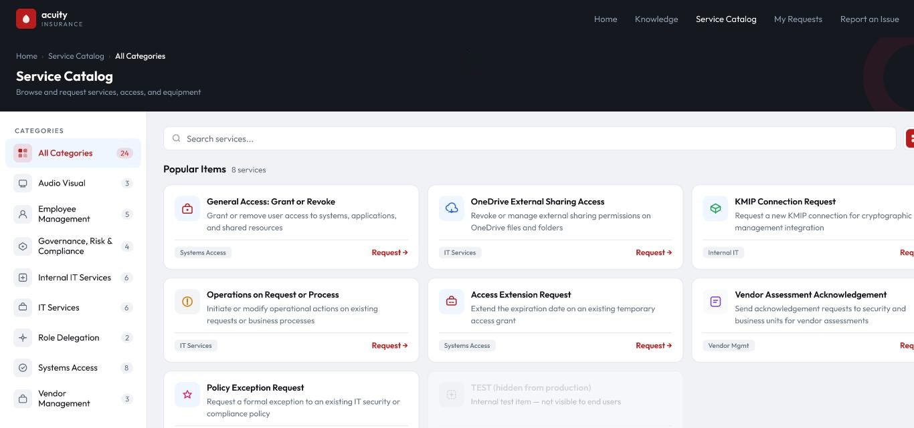
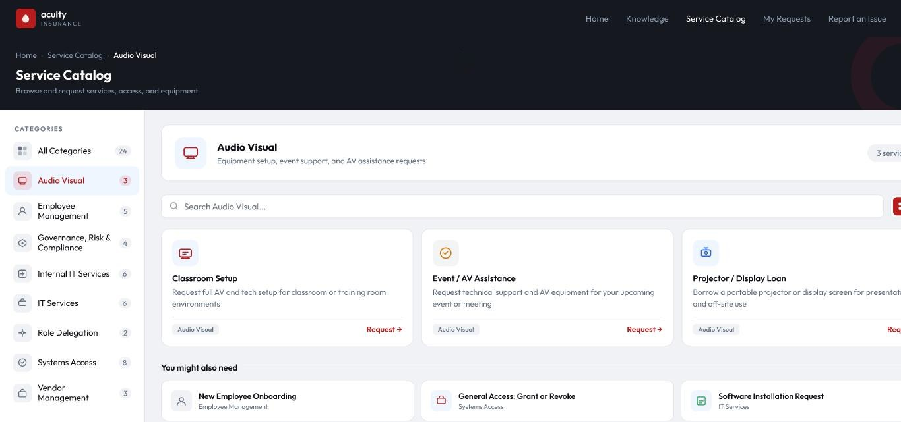

IT Service Portal Redesign
Acuity's employees used one internal portal for IT requests, access management, knowledge base and incident reporting. The goal: make the catalog easy to scan and get people to the right request faster.
I rebuilt the information architecture around 24 catalog items in 8 categories, designed a token-based design system (color, type, spacing, states) in Figma, and turned it into a clickable prototype of 10+ screens, from the homepage to request forms.
All screens are from the real internal portal. Employee data and configurations were anonymized; nothing confidential is shown.



Design
Dark hero with one search entry point, three primary actions, consistent card system.
Architecture
Catalog regrouped into 8 task-based categories with counts and "you might also need" links.
Development
Token hierarchy and Figma component architecture, plus an interactive HTML prototype of the request form for dev handoff.
Data
Homepage surfaces open requests, pending approvals and average resolution time.